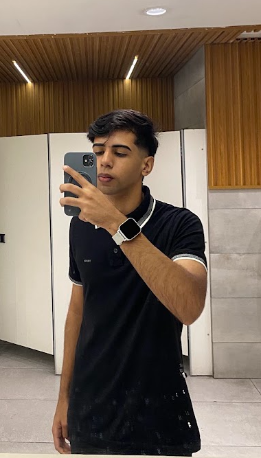

OLÁ, EU SOU
ARTHUR
Uma história que ainda está sendo escrita
Cada pessoa carrega uma história. Esta é a minha: os lugares onde cresci, as pessoas que conheci, os momentos que vivi e os sonhos que ainda quero realizar.
Conheça minha história01 — O COMEÇO
Onde tudo começou
Nasci em Vitória de Santo Antão, no dia 12 de fevereiro de 2007, às 13 horas.
Minha infância foi bastante conturbada. Eu era uma criança muito levada e costumava fazer tudo que vinha à minha cabeça, muitas vezes sem pensar nas consequências.
Minha família também sempre foi meio conturbada. Apesar das dificuldades e dos momentos complicados, gosto muito deles e procuro entender cada um da sua maneira.
02 — UMA MUDANÇA
Minha adolescência
Na minha adolescência, passei por uma fase bastante complicada. Precisei mudar de escola depois de ser expulso por causa das muitas brigas em que me envolvia.
Era comum eu ir para a secretaria da escola por causa das confusões. Naquela época, eu não pensava muito nas consequências das minhas atitudes.
Depois de tudo isso, comecei a mudar. Fiquei mais quieto, mais na minha e passei a observar mais as coisas ao meu redor.
Foi também nessa época que criei uma amizade muito boa. Era uma pessoa em quem eu podia confiar e com quem eu conseguia conversar sobre praticamente tudo.
Mas, quando chegou o ensino médio, acabamos indo para escolas diferentes. Foi uma mudança que marcou aquela fase da minha vida.
03 — UMA FASE DIFÍCIL
O ensino médio
Depois que fomos para escolas diferentes, eu e meu antigo amigo acabamos perdendo o contato. Já não conversávamos como antes.
Fiz novas amizades, mas era diferente. Não era a mesma coisa que eu tinha vivido anteriormente.
Durante o ensino médio, mudei muito. Eu estava passando por situações complicadas dentro da minha família e isso acabou afetando bastante o meu psicológico.
Uma das coisas que mais senti foi na escola. Minhas notas começaram a cair bastante, algo que nunca tinha acontecido comigo antes.
Durante muito tempo, minhas notas ficavam acima de 8. Porém, naquela fase, começaram a cair para 6, 4 e, algumas vezes, até 3.
No segundo ano do ensino médio, um professor que já havia me ensinado no ensino fundamental voltou a ser meu professor. Ele percebeu que minhas notas estavam muito baixas, principalmente na matéria em que eu costumava me destacar.
Ele veio conversar comigo para tentar entender o que estava acontecendo. Aquela conversa acabou sendo um dos momentos que marcaram aquela fase da minha vida.
O ensino médio foi uma das fases mais complicadas da minha vida, mas também foi uma época em que conheci pessoas incríveis.
Entre essas pessoas, duas se tornaram especialmente importantes para mim. Até hoje mantenho contato com elas, e são pessoas muito especiais na minha vida.
04 — APRENDENDO DA PIOR FORMA
Depois do ensino médio
Depois do ensino médio, comecei a viver uma fase muito intensa da minha vida. Fiz coisas que nunca imaginei que faria e passei por situações que jamais pensei que enfrentaria.
Em alguns momentos, cheguei a desejar poder voltar no tempo para mudar algumas coisas e fazer diferente.
Com o tempo, comecei a perceber algo que demorou muito para eu entender. No começo da minha história, falei que eu era uma criança que fazia tudo que vinha na cabeça sem pensar nas consequências.
Demorei para aprender que nossas escolhas têm consequências. E, infelizmente, aprendi da pior forma possível: passando por vários momentos difíceis.
Hoje eu entendo que muitas das coisas que aconteceram comigo também foram consequência das minhas próprias escolhas. Não posso voltar no tempo, mas posso escolher o que fazer daqui para frente.
Minha vida atualmente
Atualmente estou fazendo um curso na área de TI. Não era exatamente o curso que eu sonhava fazer. Escolhi esse caminho principalmente pela pressão familiar, mas já estou perto de terminar.
Também estudo para concursos públicos, buscando uma renda fixa e uma vida mais segura para o meu futuro.
As pessoas que permaneceram
Apesar de todas as mudanças que aconteceram na minha vida, algumas pessoas continuaram ao meu lado. Atualmente mantenho três amizades que considero incríveis e muito importantes para mim.
05 — MEUS SONHOS
O que eu quero para o futuro
Estou estudando e me preparando para conquistar um bom emprego, que me permita construir uma vida estável e realizar meus objetivos. Quero ter minhas próprias conquistas, conquistar meus bens e, principalmente, ter a liberdade de escolher onde e como quero viver.
O lugar onde vou morar ainda é algo que vai depender dos caminhos que minha carreira tomar. Não sei exatamente onde estarei no futuro, mas sei que quero construir um lugar que possa chamar de meu.
Mais do que conquistar coisas materiais, um dos meus maiores sonhos é construir uma família. Quero poder compartilhar minhas conquistas, meus momentos e meus sonhos com as pessoas que estarão ao meu lado.
Talvez eu ainda não saiba exatamente como será o meu futuro, mas sei que estou trabalhando para construí-lo. Quero olhar para trás algum dia e perceber que todos os esforços, dificuldades e escolhas valeram a pena.

A minha história ainda não terminou.
Tudo o que eu passei foi para me deixar mais forte.
Cada dificuldade, cada erro e cada momento difícil fizeram parte da pessoa que estou me tornando.